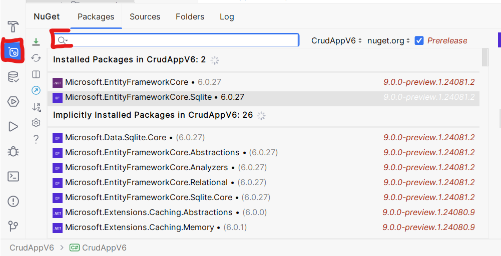

Datenbankanbindung an ASP
Link zu Beispielprojekt: github.com
Link zu Tutorials: youtube.com
Einführung Datenbanken
Um verschiedene Arten von Daten zu speichern könnte man mehrere CSV-Dateien verwenden. Jedoch ist es in diesem Ansatz schwer effizient mit den Daten umzugehen. Man kann eigentlich nur alle Daten auf einmal anzeigen. Möchte man die Daten filtern muss man die komplette Datei in den RAM laden (teilweise laden gänge auch, wäre aber noch umständlicher). Dann jedes Element in einer for(each)-Schleife durchgehen und prüfen ob die Bedingung erfüllt ist.
Datenbanken nehmen einem diese Arbeit zu einem großen Teil ab. Man kann Abfragen schreiben in denen man spezifiziert welche Art von Daten man haben möchte und die Datenbank erledigt das Filtern von selbst. Kurz erklärt wie diese Optimierungen funktionieren:
Stell dir vor wir haben folgende Klasse:
class Person{
int Id;
string FirstName;
string LastName;
}
Aus einer CSV-Datei wurden Instanzen dieser Klasse gelesen und in der Liste
List<Person> people;
gespeichert. Möchte man nun eine Liste haben in der - gefiltert - alle Personen stehen die den Vornamen Peter haben kann man so vorgehen:
List<Person> filtered = new List<Person>();
foreach(var person: people){
if(person.FirstName == "Peter"){
filtered.Add(person);
}
}
Bei ein paar tausend Datensätzen dauert das nicht all zu lange auf modernen Prozessoren. Jedoch stößt man mit diesem einfachen Ansatz an seine Grenzen wenn man mehrere Millionen oder noch mehr Datensätze verarbeitet. Die Suche - muss jedes mal neu ausgeführt werden - ist nicht parallel
Datenbanken bauen sich intern Strukturen auf um beim Einfügen der Daten später schneller zu wissen wo diese liegen. Ähnlich wie ein Inhaltsverzeichnis in einem Buch. Solche Strukturen nennt man B-Trees bzw. balanced Trees. Deren genaue Arbeitsweise ist für die Erfüllung dieser Aufgabe nicht relevant, falls es dich aber interessiert kannst du hier mehr darüber lesen: Introduction of B-Tree.
Vorbereitung
Um mit Datenbanken in ASP.NET Core arbeiten zu können benötigt man zusätzliche Bibliotheken die in der Standard-Installation nicht dabei sind.
Diese kann man über den NuGet-Paketmanager installieren. Dazu muss man in Rider in der Sidebar zunächst in die NuGet-Sektion gehen. In dem Suchfeld dann bitte nach folgenden Paketen suchen: - Microsoft.EntityFrameworkCore - Microsoft.EntityFrameworkCore.Sqlite
Funktioniert in Visual Studio ähnlich, siehe folgende Anleitung

Damit wird zunächst das Entity Framework installiert. Achte auf eine für dich kompatible Version. Wenn du das .NET Core SDK 8 nimmst muss die EF (Entity Framework) Major Version ebenfalls 8 sein. In meinem Fall in dem Screenshot habe ich für alles Version 6 genommen, die rennt stabiler in Rider. EF ist eine
Bibliothek welche ein einheitliches Interface bietet zum Zugriff
auf verschiedene Datenbanken. Das Paket Microsoft.EntityFrameworkCore.Sqlite beinhaltet Treiber damit EF weis wie
es mit SQLite-Datenbanken umgehen kann. Es gibt auch Treiber für
MySQL, MSSQL uvm.
Integration
Lege eine neue Klasse an die von DbContext erbt. Darin kannst
du den Pfad angeben an dem die Datenbank-Datei gespeichert wird.
Bei anderen Datenbanken muss man dort die URL zum Server angeben,
Username, Passwort etc.
Zudem muss man durch überschreiben der Methode OnConfiguring
festlegen was passiert wenn der Datenbank-Kontext konfiguriert
wird. Das noch leere übergebene options-Objekt muss man
konfigurieren. Durch Aufruf der UseSQlite-Methode mit einem
Connection-String gibt man dem SQLite-Treiber alle Informationen
die er benötigt um eine Datenbank anzulegen.
Die DbSet<T>-Variablen muss man für jede Klasse anlegen die
in der Datenbank gespeichert werden soll. In deinem Fall dann
die Klasse ToDoItem. Hier habe ich den Beispielcode mit den
WeatherForecasts erweitert dass diese in der Datenbank gespeichert
werden können.
public class DataContext : DbContext
{
private static string _dbPath = "data.db";
// The following configures EF to create a Sqlite database file
protected override void OnConfiguring(DbContextOptionsBuilder options)
{
options.UseSqlite($"Data Source={_dbPath}");
}
// A DbSet is a collection that can store and retrieve data
// from the Database
public DbSet<WeatherForecast> WeatherForecasts { get; set; }
}
Im WeatherForecastService kann man dann folgendermaßen Daten
aus der Datenbank lesen und schreiben:
// ctor (kurzform für Konstruktor)
public WeatherForecastService()
{
// Neuen Datenbankkontext anlegen
db = new DataContext();
// Sicherstellen dass die Datei erstellt wurde
db.Database.EnsureCreated();
}
public Task<WeatherForecast[]> GetForecastAsync(DateTime startDate)
{
// generiere zufällige daten
var weatherData = Enumerable.Range(1, 5).Select(index => new WeatherForecast
{
Date = startDate.AddDays(index),
TemperatureC = Random.Shared.Next(-20, 55),
Summary = Summaries[Random.Shared.Next(Summaries.Length)]
});
// füge mehrere Elemente auf einmal in die Datenbank ein
db.WeatherForecasts.AddRange(weatherData);
// Schreibe alle zwischengespeicherten Daten
// in die Datenbank
db.SaveChanges();
// hole alle Daten aus der Datenbank und konvertiere
// das Ergebnis in ein Array
return Task.FromResult(db.WeatherForecasts.ToArray());
}
Aufgabenstellung
- Installieren der NuGet-Pakete (wenn nicht bereits installiert)
- Datenbank-Kontext erstellen
- Daten in Datenbank schreiben
- Daten aus Datenbank lesen
- Daten nach Benutzer filtern
Beispiel wie man im WeatherForecast filtern kann nach positiven Temperaturen:
db.WeatherForecasts.Select(forecast => forecast.TemperatureC > 0);